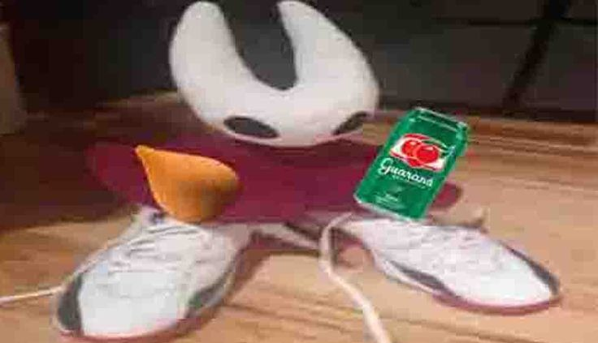

Hollow Knight
Hollow Knight
Hollow Knight é um jogo indie de ação e aventura no estilo Metroidvania desenvolvido e publicado pela Team Cherry. O jogo se passa em Hallownest, um reino subterrâneo caído habitado por insetos e outras criaturas. Os jogadores controlam um cavaleiro sem nome enquanto exploram o vasto mundo interconectado, enfrentando inimigos desafiadores e chefes épicos.
Sinopse
Um cavaleiro misterioso desce até as profundezas de Hallownest, um antigo reino de insetos que já foi próspero mas agora está em ruínas. Guiado por sonhos e uma voz distante, o cavaleiro busca descobrir os segredos deste lugar esquecido, enfrentar criaturas corrompidas pela Infecção e potencialmente salvar (ou destruir) o que resta deste reino moribundo.
A jornada leva o cavaleiro através de cavernas labirínticas, cidades abandonadas, jardins mortais e reinos profundos, onde ele descobrirá a verdade sobre sua própria identidade e o destino trágico de Hallownest.
Jogabilidade
Hollow Knight é um Metroidvania 2D que enfatiza exploração, combate preciso e progressão através de habilidades. O jogador controla o Knight, um pequeno inseto guerreiro armado com um Nail (unha-espada), explorando o mundo interconectado de Hallownest.
O combate é baseado em timing preciso e padrões de ataque. O jogador pode atacar inimigos com o Nail em quatro direções, usar Charms (amuletos) para personalizar habilidades, aprender feitiços mágicos e curar usando Soul coletada de inimigos derrotados.
O mundo é vasto e interconectado, recompensando exploração com itens secretos, atalhos e lore escondida. Habilidades como Dash, Wall Jump e Monarch Wings permitem acessar novas áreas anteriormente inacessíveis.
Personagens Principais
The Knight:Esse carinha é um motivo pelo qual não achar fofo pela sua aparência, ou seu destino é morte.
Hornet:A rainha de Hollownest, famosa pela suas falas durante o jogo. É irmã do Knight, e está na busca em tentar "reviver" ele. Como a internet é uma doença cibernética, Aqui tem um exemplo de INCESTO. Aqui está outro exemplo.
The Pale King: O antigo governante de Hallownest, um ser poderoso que trouxe civilização e consciência aos insetos. Suas ações desesperadas para salvar seu reino levaram a consequências trágicas.
The Radiance: Uma antiga deusa-traça que foi esquecida quando o Pale King ascendeu ao poder. Sua raiva manifestou-se como a Infecção que destruiu Hallownest.
The Hollow Knight: O Vessel escolhido para aprisionar a Radiance. Acorrentado no Black Egg Temple, sofre eternamente enquanto tenta conter a infecção dentro de si.
O Mundo de Hallownest
Hallownest é dividido em diversas áreas distintas, cada uma com sua própria estética, inimigos e desafios. Dirtmouth serve como vila superficial e hub principal. As Forgotten Crossroads são as ruínas centrais que conectam a maioria das outras áreas.
Greenpath apresenta jardins exuberantes cheios de vida vegetal corrompida. A City of Tears é a antiga capital majestosa, agora abandonada sob chuva perpétua. Deepnest são cavernas sombrias e claustrofóbicas infestadas com aranhas, enquanto Crystal Peak oferece minas de cristal brilhantes habitadas por mineradores zumbificados.
Desenvolvimento
Hollow Knight foi desenvolvido pela Team Cherry, um pequeno estúdio indie de Adelaide, Austrália, fundado por Ari Gibson, William Pellen e Jack Vine. O projeto começou com uma campanha no Kickstarter em 2014, buscando AU$35.000 e arrecadando mais de AU$57.000.
O desenvolvimento levou cerca de dois anos e meio. A arte distinta foi criada por Ari Gibson, enquanto a trilha sonora emocional foi composta por Christopher Larkin. O jogo foi lançado inicialmente para PC em fevereiro de 2017, recebendo quatro grandes expansões gratuitas: Hidden Dreams, The Grimm Troupe, Lifeblood e Godmaster.
Recepção e Legado
Hollow Knight foi aclamado universalmente pela crítica e jogadores, sendo considerado um dos melhores jogos indie já criados. O jogo vendeu mais de 3 milhões de cópias até 2020.
Críticos elogiaram a direção artística impressionante, a jogabilidade desafiadora mas justa, a trilha sonora atmosférica, a exploração recompensadora e a quantidade massiva de conteúdo pelo preço acessível.
O jogo foi comparado favoravelmente a clássicos como Super Metroid e Castlevania: Symphony of the Night, sendo frequentemente citado como exemplo definitivo de Metroidvania moderno. Uma sequência, Hollow Knight: Silksong, está em desenvolvimento, focando em Hornet como protagonista jogável.